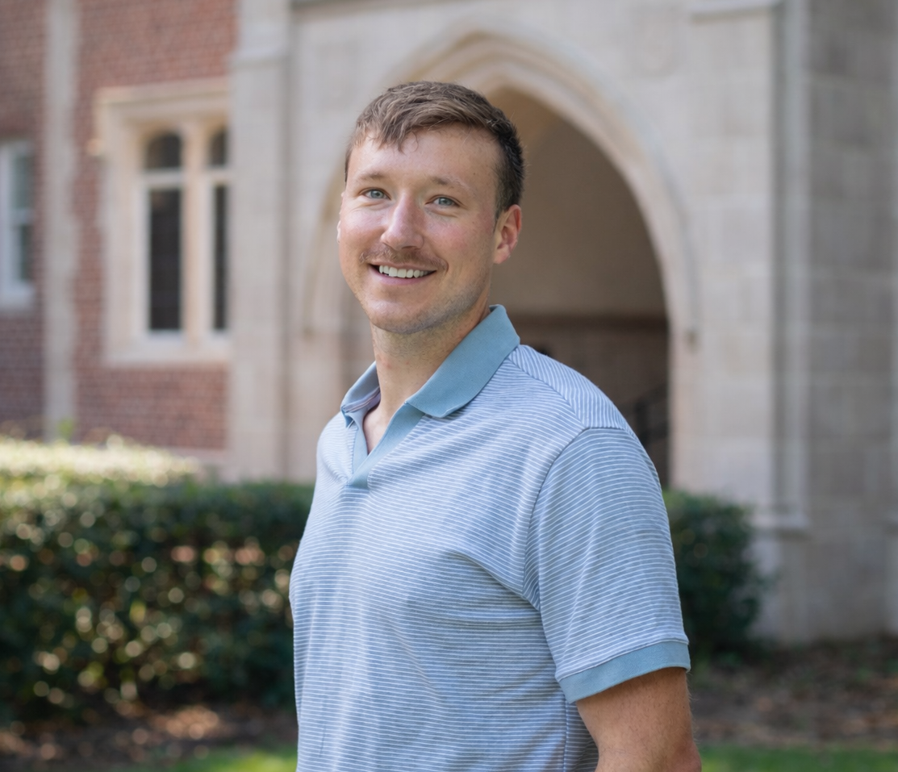

Nicholas A. Vest
I study how learners build and adapt representations of mathematical ideas and how learning environments shape their reasoning.
My work integrates developmental psychology, cognitive science, and the learning sciences to understand and support mathematical thinking.

I am a postdoctoral researcher in the School of Teaching and Learning at the University of Florida, where I conduct research on mathematical thinking and learning.
My work combines controlled experiments with computational and data-intensive approaches. I use experimental designs to test how instructional supports affect learning, computational models to investigate cognitive processes, and learning analytics with large-scale educational data to study learning in authentic contexts.
I earned my Ph.D. in Developmental Psychology in the Department of Psychology at the University of Wisconsin-Madison, where I was a member of the Cognitive Development and Communication Lab.